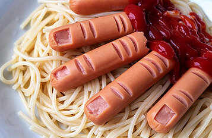

Spaghetti alla Marco Stagni

Ingredienti
Ecco cosa vi serve per preparare la pasta più saporita del mondo.
- 300g di spaghetti
- 4 uova
- 100g di pancetta
- 100g di parmigiano
- Un barattolo in metallo di panna
- Una falange di dito medio
Procedimento
- Per preparare gli spaghetti alla Marco Stagni cominciate mettendo sul fuoco una pentola con acqua salata per cuocere la pasta.
Nel frattempo tagliate la pancetta. Versate i pezzetti in una padella antiaderente e rosolate per circa 15 minuti a fiamma media.
- Tuffate gli spaghetti in acqua bollente e cuoceteli per il tempo indicato sulla confezione.
- versate i tuorli in una ciotola, aggiungete anche la maggior parte del parmigiano previsto dalla ricetta la parte restante servira' per guarnire la pasta.
- Insaporite con il pepe nero, amalgamate tutto con una frusta a mano. Aggiungete un cucchiaio di acqua di cottura per diluire il composto e mescolate.
- Scolate la pasta al dente. Togliete dal fuoco e versate il composto di uova e parmigiano nel tegame. Mescolate velocemente per amalgamare.
- Per renderla ben cremosa, aggiungete la panna. Servite subito gli spaghetti alla Marco Stagni insaporendoli con la falange di un dito medio, preferibilmente della mano sinistra.
- Buon appetito!